M0愚者
The Fool
正始まり・自由・無邪気・未知への一歩
何も持たずに新しい世界へ踏み出す。計算より好奇心。始めることそのものに意味がある。
逆無計画・軽率・現実逃避
勢いだけで足元を見ていない。準備不足や、責任から逃げたい気持ち。
ライダー版 78 枚
略号・スプレッド つき
1909 年のライダー版(ウェイト版)の 78 枚を、1 冊で持ち歩ける大きさにまとめた小さな手引きです。
前半は入門とスプレッド(並べ方)、後半は78 枚の一覧です。どのカードにも略号(S1・WP・M0 など)を付けました。
カードの意味は「決まった答え」ではなく、考えるきっかけです。一覧の言葉は、絵を見るための手がかりと思ってください。
大アルカナ 22 枚(M0〜M21)は、人生の大きな節目やテーマ。愚者から世界まで、ひとつの旅の段階を描きます。
小アルカナ 56 枚は 4 つのスート×14 枚。毎日の出来事を表します。
| ワンド | 火・意志・行動・情熱。仕事や挑戦 |
| カップ | 水・感情・つながり。気持ちや人間関係 |
| ソード | 風・思考・言葉。判断や葛藤 |
| ペンタクル | 地・お金・体・暮らし。現実の積み重ね |
数: 1 始まり／2 選ぶ・つり合い／3 広がる／4 安定／5 ゆらぎ／6 調和／7 試される／8 動く・励む／9 実る／10 完成・重さ
人物: ペイジ=学ぶ人・知らせ／ナイト=動く人／クイーン=内で育てる人／キング=治める人
知らないものがあっても大丈夫。絵の中の知らないものに気づくのも、読みのうちです。
カードが上下逆に出たとき。悪い意味ではありません。次のように読めます。
逆位置を使わず、すべて正位置で読んでもかまいません。
「いつ〜になる?」より、「どう向き合えばいい?」「何が見えていない?」のような、自分で動かせる問いが向いています。
はい／いいえで答えが出る問いは、1 枚引きで十分。複雑な問いは、スプレッドで流れを見ます。
同じ問いを、気に入る答えが出るまで引き直すのは避けましょう。最初の 1 回を、よく読みます。
カードごとに短い名前(略号)を付けました。引いた札を、すぐ探せます。
| 大アルカナ | M+番号(0〜21) |
|---|---|
| 小アルカナ | スート+数。Wワンド・Cカップ・Sソード・Pペンタクル |
| 人物 | Pペイジ・Nナイト・Qクイーン・Kキング |
例: S1=ソードのエース／WP=ワンドのペイジ／PQ=ペンタクルのクイーン(P はスートとしても人物としても使うので、最初がスート、次が人物)／M15=悪魔
ThinkDraw では、検索に略号を入れて(S1・WP・M0・デビル)カードを探せます。
スプレッドは、カードを並べる型です。位置ごとに「何を見るか」が決まっています。
枚数の多い型ほど、読みが長くなります。最初は 1〜3 枚から。
向く問い 今日の 1 枚・今いちばん必要な視点を知りたいとき
読み方 絵をじっと見て、最初に気づいたものを言葉にします。迷ったら、これ 1 枚で十分です。
向く問い 物事の流れをつかみたいとき
読み方 過去→現在→未来を、ひとつの短い物語につなげます。未来は「このまま進んだ先」と読みます。
向く問い 悩みの整理・次の一歩を考えたいとき
読み方 「状況」と「課題」の差に注目。助言は、課題を越える 1 つの行動として読みます。
向く問い 相手との関係を見たいとき
読み方 真ん中は、二人の間にあるもの。自分と相手のカードが似ているか、離れているかも見ます。
向く問い 考えと行動と気持ちのずれを見たいとき
読み方 3 枚の向きや数を比べ、いちばん離れている位置が、今の引っかかりです。
向く問い 障害を越える方法を探したいとき
読み方 障害のカードを悪者にせず、「何を教えているか」を読みます。対策と結果をつなげます。
向く問い 問題を原因から解きたいとき
読み方 「原因」と「隠れた要因」の違いが肝心。助言どおり動いた先を、結果で確かめます。
向く問い A か B かで迷っているとき
読み方 良い・悪いではなく、各道で自分が「どう感じるか」を見ます。すぐの結果と、先の結果の差にも注目。
向く問い 人との関係・相手の気持ちを知りたいとき
読み方 自分と相手の気持ちを向かい合わせて読み、アドバイスと結論で着地させます。
向く問い 全体の流れを広く見たいとき
読み方 左から右へ時間が進みます。助言と障害を結んで、結果を読むと筋が通ります。
向く問い 大きな悩みを、深く見たいとき
読み方 中心の 2 枚(現在・障害)が核。次に意識と無意識、時間の流れ、右の柱の順に。時間をかけて 1 つの物語に。
向く問い 自分の中の層を見たいとき
読み方 上(目指すもの)から下(現実)へ、心が形になっていく順に読みます。下の方から読み返すのもおすすめ。
向く問い 1 年の見通しを立てたいとき
読み方 各月は「テーマ」。予言ではなく、その月に意識すると良いことと読みます。
向く問い 暮らしのあらゆる面を一度に見たいとき
読み方 12 の位置は暮らしの領域。引いたカードの多いスートに、今の関心が出ます。
何も持たずに新しい世界へ踏み出す。計算より好奇心。始めることそのものに意味がある。
勢いだけで足元を見ていない。準備不足や、責任から逃げたい気持ち。

必要な道具はもうそろっている。意志を形にする力。今が始めどき。
能力はあるのに空回り。口先だけ、または道具を使いこなせていない。

声を出す前に、静かに感じ取る。直観や、まだ言葉にならない知恵。
直観を無視している、または殻に閉じこもりすぎ。秘密が重くなる。
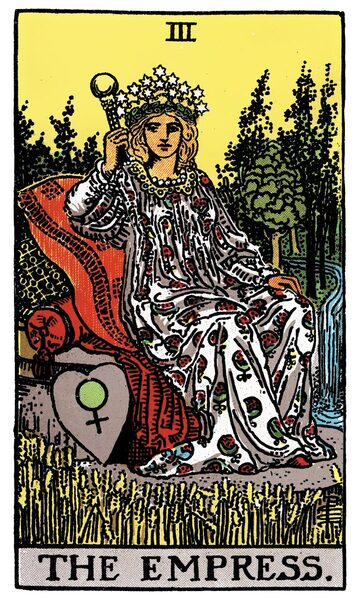
育てる・実らせる・味わう。豊かさは手をかけた結果としてやってくる。
世話の焼きすぎ、甘やかし、または自分を育てることを忘れている。

秩序と責任で場を守る。ルールを作り、決めて、引き受ける。
支配的・頑固になっている。または決める人がいない状態。
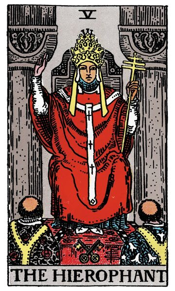
伝統や教えに学ぶ。信頼できる型や、相談できる人。
形式だけに従っている、または型を破りたい気持ち。

心から選ぶ。結びつき、価値観がそろうこと。
迷いや不一致。誘惑に流されて選び損ねる。
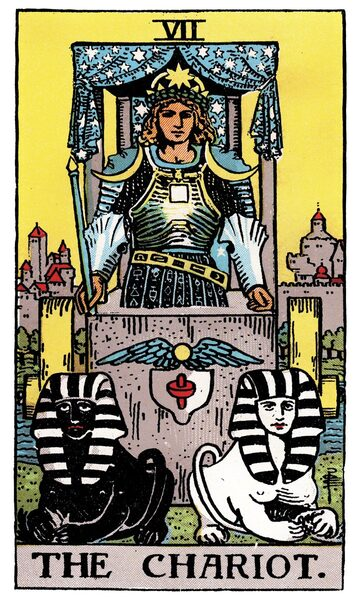
意志の力で前へ進む。相反するものを束ねて走らせる。
暴走、または方向が定まらず止まっている。
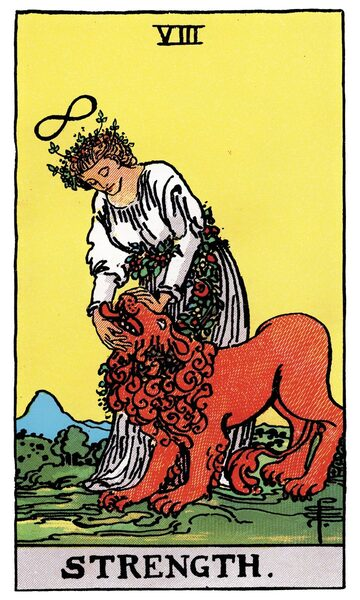
力ずくではなく、やさしさで手なずける。内側の強さと忍耐。
自信を失っている、または感情に振り回されている。
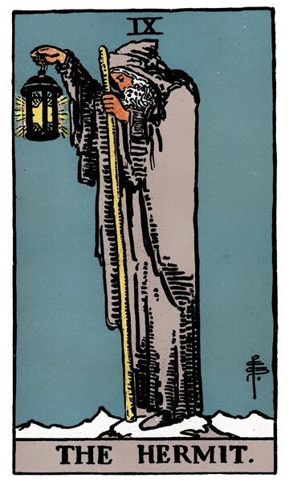
一人になって内側を照らす。探求と、自分なりの答え。
孤立しすぎ、または一人で考える時間が足りない。
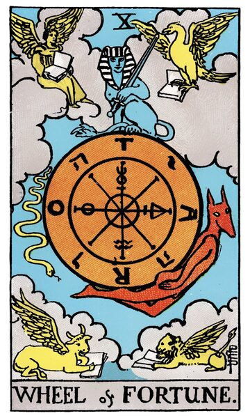
流れが変わる。自分だけでは決められない巡り合わせ。
流れに逆らっている、または悪い巡りがしばらく続く。

事実で公平に判断する。自分の行いが自分に返ってくる。
偏った判断、または判断から逃げている。

動かないことで見えるもの。逆さから見る、手放して待つ。
意味のない我慢、または身動きが取れないもどかしさ。

一つの区切りが終わり、次が始まる。避けられない変化。
終わったものにしがみつく。変化を先延ばしにしている。

混ぜ合わせて、ちょうどよくする。ゆっくり整える途中。
やりすぎ・偏り。混ぜるものが噛み合っていない。

縛られている。でも鎖はゆるく、外そうと思えば外せる。
縛りに気づいて外し始める。または依存がさらに深まる。

思い込みや仕組みが一気に崩れる。壊れて初めて見えるもの。
崩れを先延ばしにしている、または小さく済んでいる。

嵐のあとの希望。素直に注ぐと、回復していく。
希望を見失う、または理想が高すぎて動けない。

はっきりしない。不安や想像がふくらむ夜の道。
霧が晴れていく。誤解や不安がほどける。
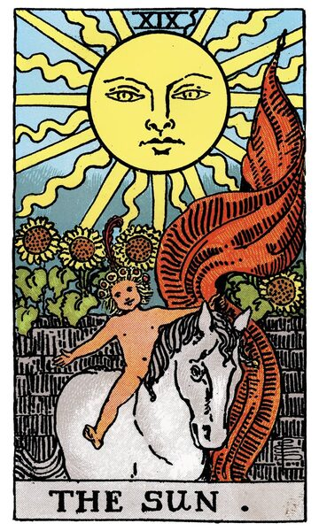
明るく、隠さない。素直な喜びと成功。
元気を装っている、または喜びが少し遅れている。

呼びかけに目覚めて、立ち上がる。過去を清算して再出発。
呼ばれているのに動けない。後悔に足を取られる。
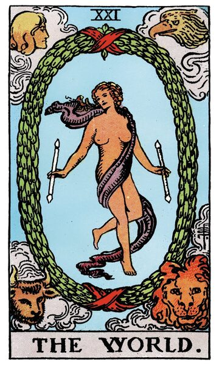
ひと巡りして完成する。全体がつながり、次の旅へ。
あと一歩のところで止まっている。仕上げが残っている。
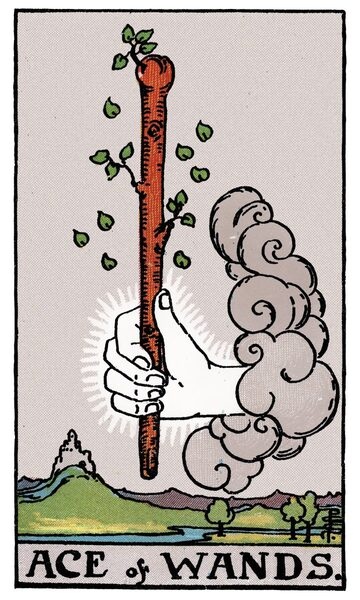
情熱の芽が差し出されている。やりたい気持ちの始まり。
火がつかない、または勢いが空振りする。

手の中の小さな世界から、先を見渡して計画する。
見通しが立たず迷う、計画倒れ。

出した船の帰りを待ちながら、さらに先を見る。
見込みが外れる、展開が遅い。

ひと段落して祝う。安心できる場所。
落ち着かない、祝いの席の小さなすれ違い。

ぶつかり合いながら鍛える。にぎやかな競争。
争いを避ける、または内輪でこじれる。

勝って迎えられる。評価と自信。
慢心、または期待した評価が得られない。

高い所で立場を守る。不利でも引かない。
押される、弱気になる。

物事が一気に動く。知らせが飛んでくる。
遅れる、行き違う、空回り。
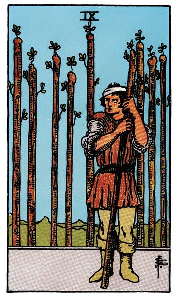
傷だらけでも最後まで粘る。用心深さ。
疲れ切っている、疑いすぎ。
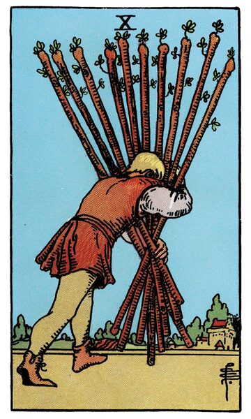
抱えすぎて前が見えない。ゴールは近い。
荷を下ろす、または抱えきれず崩れる。
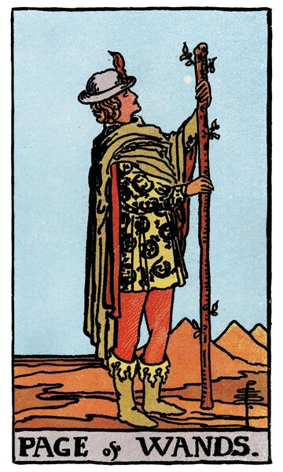
好奇心で新しいことを知りに行く。
飽きっぽい、未熟なまま動く。

勢いよく飛び出す。冒険と行動力。
せっかち、無鉄砲。

明るく堂々としている。人を惹きつける自信。
強引さ、嫉妬。

先を見て決める。人を率いるビジョン。
独断、傲慢。

心が満ちてあふれる。愛や感情の始まり。
気持ちを閉じる、満たされない。
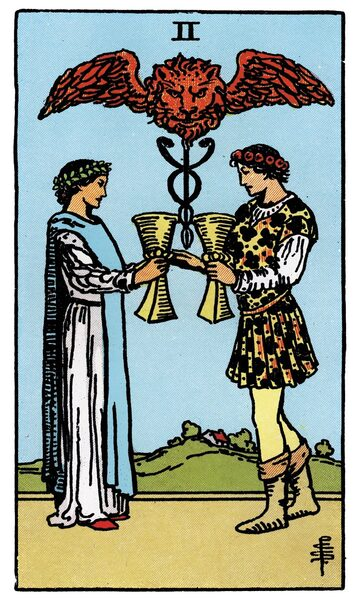
二人の心が通い合う。対等な約束。
すれ違い、釣り合いが崩れる。

仲間と祝う、分かち合う。
楽しみすぎ、関係の三角形。

退屈して内にこもる。差し出されたものに気づかない。
新しい関心に目が向く。
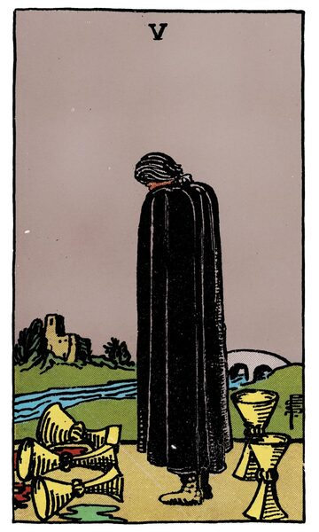
こぼれたものを嘆く。でも後ろに残った杯がある。
立ち直り、受け入れる。

懐かしさ、素朴なやさしさ。
過去にとらわれる、または前を向く。

選択肢が多すぎて夢を見る。幻想。
目が覚めて選ぶ。

積み上げたものを置いて、より深いものを探しに行く。
ためらい、離れられない。

願いがかなって満足する。
欲張り、うわべの満足。
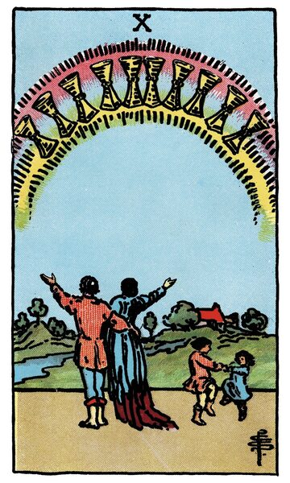
家族や仲間との安心。心の平和。
理想とのずれ、家の中の不和。

感じやすく、やさしい知らせ。
感情的、甘え。
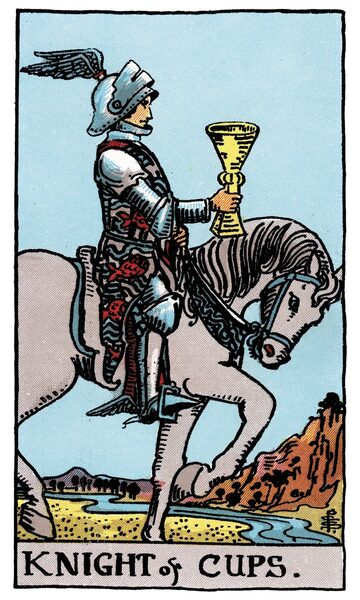
気持ちを運ぶ。ロマンや誘い。
口先だけ、移り気。

共感して受け止める。深い思いやり。
感情に流される、相手に依存する。
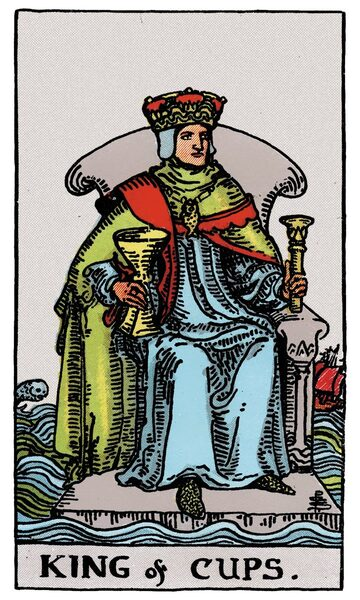
落ち着いて感情を扱う。包む力。
感情を抑え込む、操ろうとする。
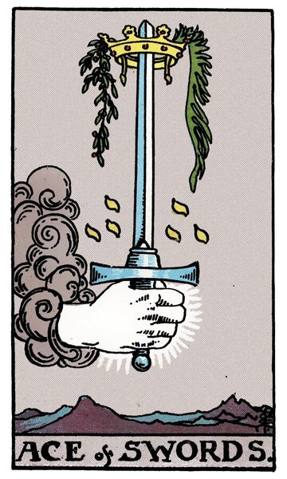
切り開くように見抜く。言葉で真実を示す。
混乱、言葉が刃になる。
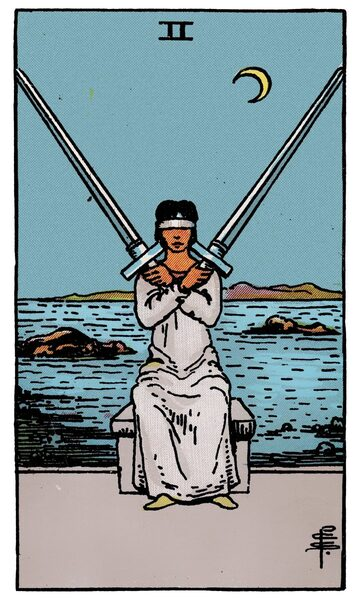
目隠しで選ばない。保留して膠着する。
決断のとき、情報が入ってくる。

心が痛む。悲しみや別れ。
痛みを整理して回復し始める。
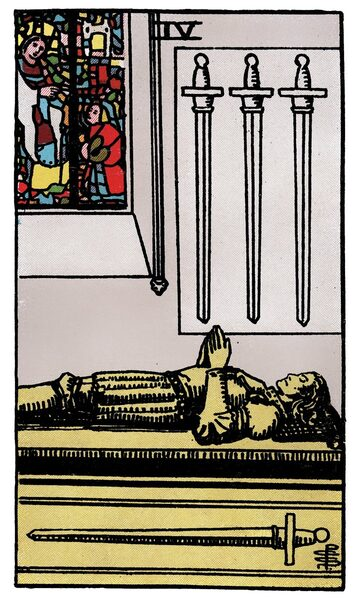
休んで回復する。静かな時間。
休みすぎ、または再び動き出す。

勝っても何かを失う。後味の悪い対立。
和解、引き下がる。

穏やかな方へ移っていく。抜け出す途中。
抜け出せない、後戻り。
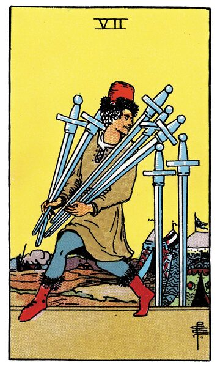
こっそり持ち出す。策略や近道。
ばれる、正直になる。

縛られて動けない。でも縛りはゆるい。
解放される、視界が開ける。
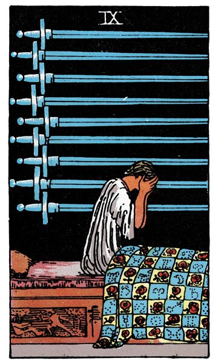
夜中に眠れないほどの不安。考えすぎ。
不安が薄れる、誰かに話す。
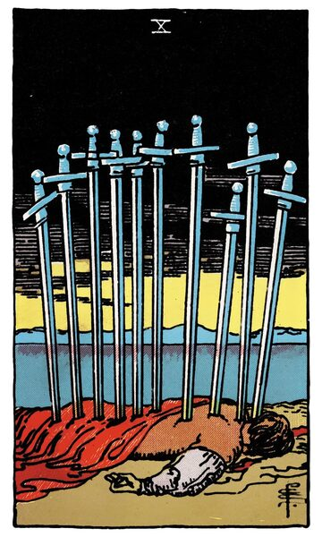
これ以上は落ちない底。終わり。
回復が始まる、夜明け。
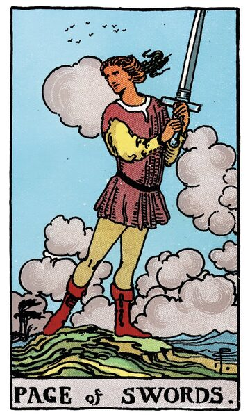
見張る。情報を集めて警戒する。
詮索、うわさ話。

一直線に突っ込む。鋭さと速さ。
衝動的、攻撃的。

率直で、自分の頭で立つ。
冷たさ、辛辣さ。

筋道で判断する。権威と公正。
冷酷、独断。

形になる種が手に入る。具体的なチャンス。
機会を逃す、欲が先に立つ。

二つをやりくりしてバランスを取る。
手が回らない、ぐらつく。

技を持ち寄って一緒に作る。
連携不足、手抜き。

しっかり守り、抱え込む。
けちになる、または手放す。

寒さの中、助けに気づかない。
回復、支援を受け取る。

与えることと受け取ること。
見返りを求める、不公平。

育つのを待って見直す。
焦る、成果に不満。

こつこつと腕を磨く。
単調、手抜き。

自分の力で築いた余裕。
見せかけ、依存。

受け継がれる豊かさ。長い安定。
家族の問題、土台のぐらつき。
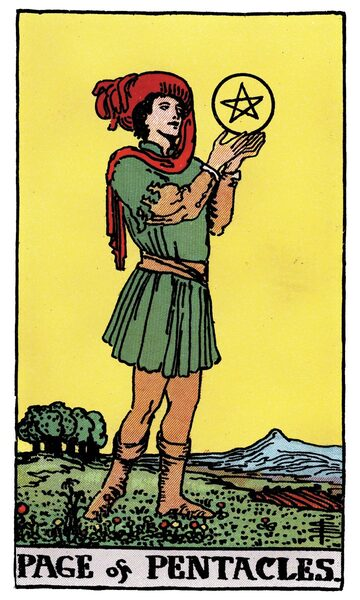
学びに集中する。堅実な一歩。
怠ける、夢見がち。
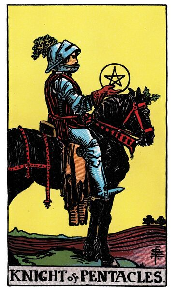
ゆっくりでも確実に進む。
停滞、頑固。
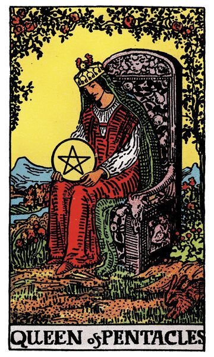
面倒を見て、実際的に豊かにする。
心配しすぎ、物に偏る。

実りの上で安定する。頼もしさ。
物欲、保守的すぎ。
カードは、未来を決めつけるものではなく、今の自分の見方を映す鏡です。
体や心の不調、法律、お金の大きな決断は、占いだけで決めず、専門の人にも相談してください。
同じカードも、日によって、人によって見え方が変わります。外れる・当たるより、気づきがあったかを大切に。
次のページからは、引いたカードや気づきを書き留めるメモです。
タロット小冊子
ライダー版(1909)の絵と、ThinkDraw のために書いた文
絵: A. E. Waite / Pamela Colman Smith(パブリックドメイン)